Introduction
Why Berlin you may ask. There are many beautiful cities in Europe and I am not sure that Berlin is notably one of them, so why Berlin? I was born in 1934, the year after Hitler and the Nazi regime came to prominence and my earliest recollections include overheard discussions between my parents and others, expressing concern and dismay at the inevitability of an approaching world war. The Great War of 1914-18 was supposed to end all wars so why another after so few years? The words Hitler, Nazi, Germany, even Berlin were stamped into my mind as the personification and terrain of all that is evil. And then in 1939 the inevitability of war was realised. For five long years it raged. Berlin was its goal. In retaliation to the London blitz we were determined that Berlin would get the pasting it deserved. And it did. As children we played games. Our imagination turned the wood heap into a ‘Flying Fortress’ or a ‘Liberator’ and we flew our heroic missions over Germany to Berlin, dodging the flak, warding off the Nazi fighters and finally dropping our swag of bombs on the target below before making the hazardous journey back to mother England – Berlin getting all it deserved!
And then the war was over and we became aware of that other ‘war’ the Nazis fought – the war against the defenceless Jewish and Gipsy populations, the death camps, the gas chambers, the Holocaust as it came to be called. Somehow at the centre of all this was Berlin. Soon followed the Russian occupation, the division of Germany into West and East, the separate division of Berlin and finally the Wall and the posturing of western politicians at the obscured Brandenburg Gate expressing their theatrical outrage. All of this gave the history of Berlin an immediacy and while no doubt the City’s early history is colourful and interesting, that recent history through which I have lived, encompassing my own life span, was what really interested me. I had to see it and walk it!
DAY ONE
Sunday 26 September 2004
Arrival
Chris and I departed London Heathrow at 7.00am on a British Airlines flight for Berlin’s Tegal Airport. Chris with an eye to economy had booked our accommodation at the northern end of Friedrichstrasse in a ‘’ in the district of Mitte. Chris had done his homework very thoroughly both via internet and that remarkable guide book, ‘Lonely Planet’. Because I had been touring UK I had given little thought to how we would use our three days. I need not have worried. Chris had it well planned. Three days! How could we see and feel Berlin, a city of 3.5 million souls in three days? We rapidly passed through the efficient exiting processes of Tegal airport and following the directions Chris had in his pocket we took a bus to Kurt Schumacherplatz UG station north of Tegal and the very modern and clean UG train to Oranienburgerstrasse station where on surfacing we found ourselves in Friedrichstrasse nearly opposite our , the ‘Hostel Adler’.
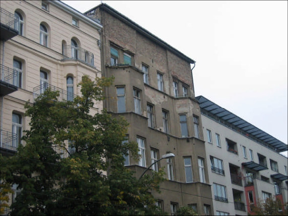
Is this Berlin? Grey buildings still bearing the scars of the war, some pock marked with bullet holes, some clearly bombed out but standing and apparently still in use, graffiti covered walls, but not ordinary spray- can graffiti, remarkable art work by skilled artists, an overgrown empty space containing Indian village like structures? Yet, modern articulated trams plying the streets and a superb underground rail system. Gaining our bearings we saw our pension nearly opposite the train station on the western side of Friedrichstrasse. Back packs on we made our way to the Hostel Adler (not bad appearance from the street) and into the unlit covered alley that claimed to be the entrance, through a door and up a flight of equally dark stairs to a reception office staffed by a very pleasant Vietnamese fellow. Reception procedure was standard and we were directed to our room, as wide as a corridor with two beds no more than 30cms apart. From the appearance of the ceiling the rooms had been created by subdividing what may have been a standard bedroom into two with a fixed partition. We each had a single towel measuring about 40 cms square, standard practice according to Chris in European accommodation of that level. Nevertheless, the beds were clean and, as it turned out, comfortable but perhaps we were so tired at the end of a day we would not have noticed. The Adler seemed to be under some form of re-construction, creating more two rooms out of one and peering through some door- holes covered by a rough drape one would see a completely gutted space on the other side. The bathrooms/toilets were uni-sex so one had to be a little careful when using either facility.
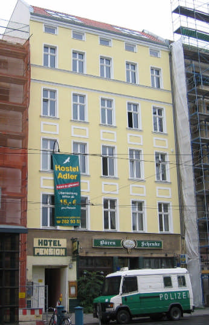
It took me a little time to realise that we were in Ost (East) Berlin, that part of Berlin that before unification was controlled by the communist German Democratic (which it wasn’t) Republic (GDR) and contiguous with East Germany. The West Berlin of before unification was an island within East Germany connected to the Federal Republic of Germany (West Germany) by the autobahn and by air to Tegal airport. While I was reasonably familiar with the history it took three days of traversing the streets of old Berlin and the fact that where we were was ‘old Berlin’, what we might call these days the CBD. It was hardly surprising that the Russians included this ‘old Berlin’, Berlin’s CBD, in the Russian sector – to become Ost Berlin. It was the Russians after all who ‘liberated’ Berlin from the Nazi rule with 1.5 million Soviet soldiers spearheading in from the east against fierce resistance from the Wehrmacht and SS, with huge loss of life; a resistence that continued unabated until Germany’s final capitulation on the 7th May 1945. Nevertheless, the western sector of Grosse (greater) Berlin, comprising the previous US, British and French sectors and extending north and south as well as west of the Russian sector was considerably greater in extent than Ost Berlin which of course had the advantage of contiguity with communist East Germany. This was the arrangement agreed to at the Conference of Yalta in February 1945. From the remnants of the Wall remaining today to the north, west and south of the old city (which seems to sit in a pocket of West Berlin) one has the false impression that it was the eastern sector that was surrounded by the wall.
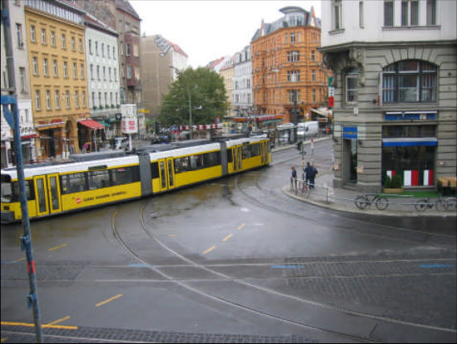
From the window of our little pension room – yes, we had a window, surprisingly clean too – we overlooked the intersection of Friedrichstrasse and Oranienburgerstrasse. Tram tracks ran in all directions with bright yellow two carriage trams that contrasted with the sombre grey buildings flanking the streets, trundling past with a surprising frequency, their wheels screeching on the tracks as they turned the corner. It was time to start walking and we were ready for lunch. The roads were glistening wet under grey skies.
wANDERING We set out down Oranienburgerstrasse. In the distance through the misty rain we could see the tall TV tower with the large orb near its top, the Fernsehturn, built by the GDR in 1969. To our immediate right was this strange part-demolished three or four storied building with the name ‘Tacheles’ across its front. Beneath, at street level, were up- market fashion salons, small boutiques in remarkable contrast to the building above. (More about ‘Tacheles’ later) We were to come to realise that this was commonplace in the old city – buildings still bearing the scars of WW2 as if badges of honour, reflecting the sheer scale of the destruction wrought on the city and the years of neglect since. The more iconic buildings we were to come across had been, or were still being, extensively renovated, but such buildings were not to be found in Oranienburgerstrasse with one exception.
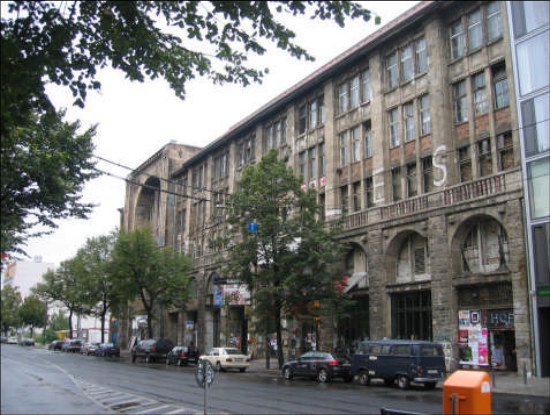
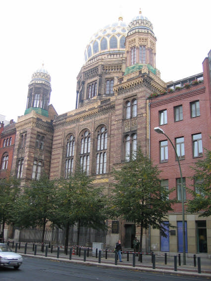
On the northern side of the Strasse we passed a somewhat bizarre looking structure surmounted by a gleaming gold dome with two smaller domes on corner towers fronting the street. The footpath in front of the building was cordoned off with police guards denying access. A gentleman entering the building in black suit and hat, by his appearance identified it as a synagogue – but why under guard? We came to realise that this northern part of Mitte was the Jewish quarter of Berlin before the war and possibly still is. Lonely Planet told us that the Synagogue was the Neue Synagogue and Centrum Judaicum (Jewish Museum). There were of course some relatively new buildings, with few exceptions of uninspiring design, four or five stories high – functional concrete blocks presumably built by the GDR.
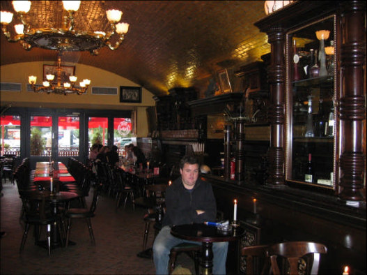
At the end of Oranienburgerstrasse we arrived at Monbijouplatz, an overused green space adjacent to an elevated rail viaduct. Amidst the litter scattered groups of people were eating lunch under rather threatening skies. Chris and I kept walking to the base of the viaduct to find a string of commercial premises within and partly beneath the structure. One of these) proved to be a large restaurant complex occupying several of the spaces under the viaduct, beautifully furnished in heavy dark timber with fully vaulted brick ceilings and the frequent rumble of trains passing above. We indulged in the very non-German fare of pizza and coke served by an attractive and attentive waitress who ‘sprechen sie Englisch’ very well. She told us she had always lived in the East and I wondered how people such as she had made the transition following reunification.
Following this late lunch and following the ‘Lonely Planet’ walking guide (the route in reverse which made it a little difficult) we arrived at the nearby Hackescher Hof Markt, a fully restored complex of eight courtyards referred to as Hof 1 to Hof 8 with fronting facades emblazoned with intricate designs. The Hackescher Markt, of Jewish origin, comprises restaurants, galleries, boutiques and small theatre. It was built in 1907 and has been faithfully restored since unification.
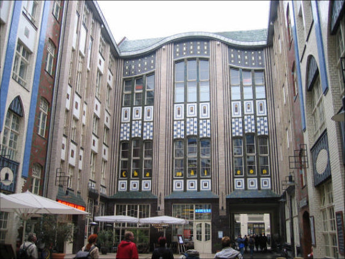
We continued then around the curve of the rail viaduct (Dircksenstrasse) passing a number of dilapidated buildings, bearing the scars of war, and vacant land where full demolition had occurred at some time arriving at Alexanderplatz and its Fernsehturm, towering some 368 metres above the pavement making it Berlin’s tallest structure. For the payment of a number of Euros one may go to the top and overview all of Berlin but we chose not to do that.
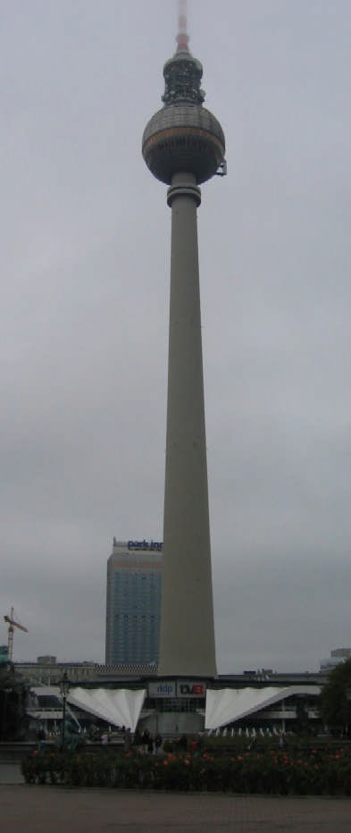
The weather was murky and we decided that visibility would be too limited to justify the considerable cost. Lonely Planet told us that the Fernsehturm was built in 1969 to demonstrate the GDR’s technological superiority. The result is impressive enough and like much of the communist inspired re- construction, not notably attractive. The buildings adjacent to the Platz themselves are blocky in appearance and far from inspiring. The somewhat bizarre fountain surrounded by teutonic maidens emitting spurts of water from their various orifices with a Neptune like figure (the German equivalent perhaps) surmounting a central podium is called the Brunnen der Volkerfreundschaft (Fountain of Friendship among the people). Christopher insisted on posing in the arms of one of the maidens for a photo opportunity.
We left Alexanderplatz and meandered through streets past ruins, prosperous shops, churches and public buildings, notably the Rotes Rathaus (the Red Town Hall – the Berlin Senate Chamber), along Spandaustrasse, past the Marx-Engels Forum and into Karl Liebknechtstrasse. Opposite the Rathaus in a small park are the statues of the Rubble Workers, Trumerfrauen and Aufbauhelfer, honouring the men and women who cleared the rubble and re-built the city after the War – literally with their bare hands. (Lonely Planet). The Rotes Rathaus is an imposing terra-cota building with a central clock tower and dominates the surrounding streetscapes at the southern end of Alexanderplatz. If it was war damaged at all it has since been perfectly restored.
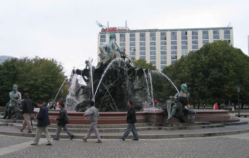
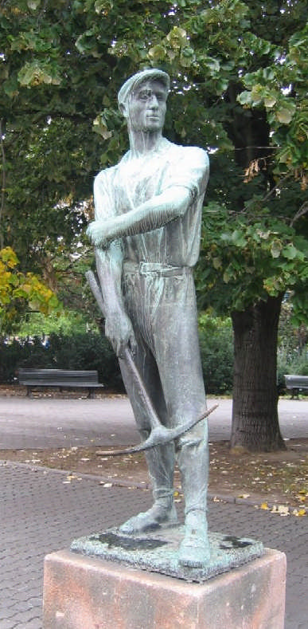
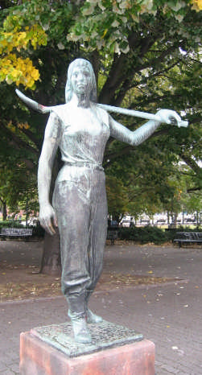
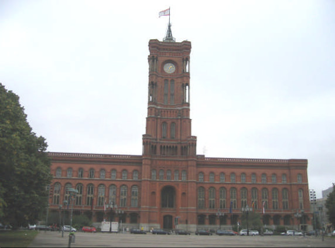
In Karl Liebknechtstrasse we crossed the River Spree and saw for the first time the appalling sight of the Palast der Republic (Volks Palast). This copper tinted oblong glass structure fronting the western bank of the Spree replaced the Berliner Stadschloss (City Palace), the royal residence of Prussian Kings. One assumes the old palace was extensively war damaged and was no doubt anathema to the communist GDR government. In its place Berlin now has this eyesore of a building which in turn is being demolished, a difficult task since it is full of insulating asbestos. It was of course, the headquarters of the GDR. On its western front it faces the Scholfzplatz, a barren piece of land that may have been the Stadschloss gardens (my conjecture) fronting the Spreekanal, a man-made anabranch of the Spree River.
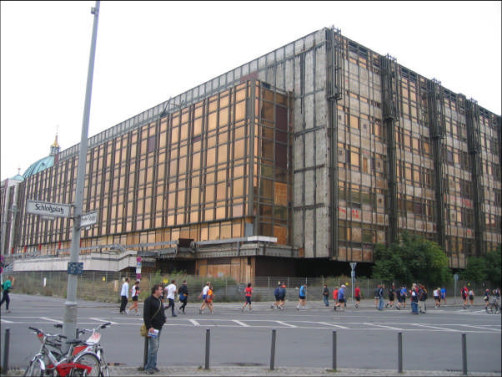
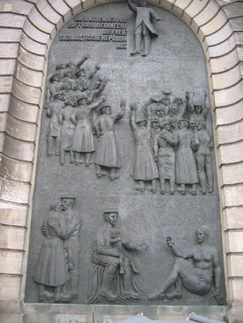
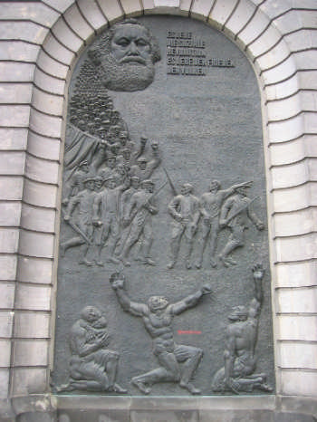
Fronting the Spree and adjacent to the Volks Palast are buildings of earlier origin that give some impression of what the Berliner Stadschloss might have been like. They are the Ribbechhaus (a Rennaissance structure), the Alter Marstell (old stable) and the Neuer Marstell (new stable – built 1901). Lonely Planet told us that these once sheltered the royal horses and carriages and that during the 1918 November Revolution these buildings became the home and headquarters of the revolutionary leaders. They are now public libraries.
Crossing the Spree at the narrow bridge on Rathausstrasse we passed between the Neuer Marstell and the Volks Palast. On the northern facade of the Neuer Marstall facing into Rathausstrasse are two large bronze reliefs, one showing Karl Liebknecht’s proclamation of the German Socialist Republic from the balcony of the City Palace, the other the face of Carl Marx and the socialist struggle.
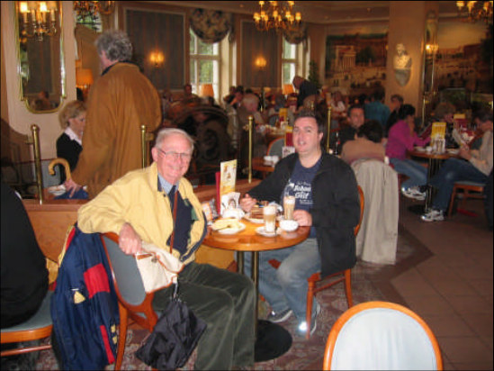
I was getting tired but we continued walking, more or less following the reverse direction of the Lonely Planet walking guide. Continuing west along Rathausstrasse we passed into Werderstrasse, crossed the Spreekanal and meandered towards Bebelplatz, off the Unter den Linden and flanked by the Alte Klonigliche Bibliothek (State Library) and the Staatsopera (State Opera). The Bebelplatz was originally called the Operaplatz and was the scene of the 1933 Nazi book burning which event is now memorialised in a glass roofed underground space containing empty library bookshelves. Unfortunately this area was cordoned off for construction purposes so we were unable to peer in. We entered the Opera House Restaurant (Opernpalais) behind the State Opera and once the Crown Princess’s palace for ‘a bite to eat’ (Christopher’s term) and to give our legs some time to recover. We found ourselves in a lavishly furnished and well patronised establishment famous for its cakes – a huge variety. We were shown to a table and indulged in a quite lavish afternoon tea after which we felt sufficiently recovered to continue.
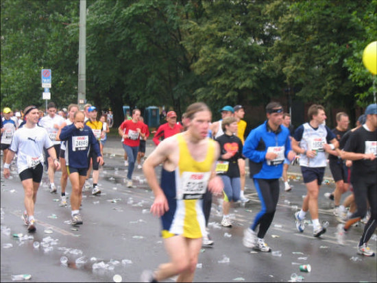
During our wandering of the streets of Berlin we came across large groups of runners on what was apparently a ‘fun run’. Not quite – it was the annual Berlin Marathon in which 36,193 from 91 countries (2004 figures) participate – not all running, many walking and looking decidedly exhausted, The event starts and finishes at the Brandenburg Tor (Gate) and while no doubt some finish the course relatively quickly we even saw others making their way rather dejectedly towards the finish line almost as evening was descending. Many of the streets had barriers erected and the route was obvious from the paper cups and plastic water bottles littering the way.
Having been re-energised by our afternoon tea in such salubrious surroundings we continued – walking. Heading south again we were in Markgrafenstrasse leading into the Gendarmeninmarkt. This beautiful restored square is flanked by two cathedrals of similar design. The Franzosischer Dom (French Cathedral) is on the northern side and the Deutsher Dom (German Cathedral) is on the southern side of the square. Central between the two Cathedrals is the Konzerthaus (Concert Hall), an imposing building built in 1821. All three were badly damaged in WW2, the Konzerthaus now fully restored and both cathedrals swathed in white plastic sheeting apparently still undergoing restoration or at least cleaning.
We turned west into Mohrenstrasse and then north into Friedrichstrasse and found ourselves in a very upmarket part of the old city. Two modern buildings (Quatier 205 and Quatier 206) contain arcades of shops on two levels selling expensive couture, designer labelled everything – Gucci, Yves St Laurent and more. Then there is Galleries La Fayette, an obviously expensive department store – open even on a Sunday. Further north we passed car showrooms, more expensive street level boutiques in a mix of buildings, some restored and some relatively new, many colonnaded and then we reached the Unter den Linden again.
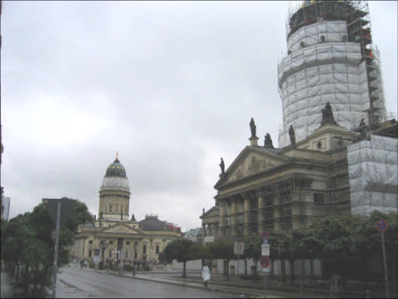
Unter den linden – Brandenburg tor
Tuning west into this fine and historical boulevard, the very heart of Berlin, we were moving into embassy-land. On the southern side occupying nearly a whole block was the imposing Russian Embassy, built I would guess in the GDR period in typical Communist neo-classicism style – substantial and no doubt functional but not at all inspiring and now flying the white, blue and red surprisingly distinctive flag of old Russia.
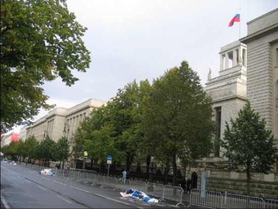
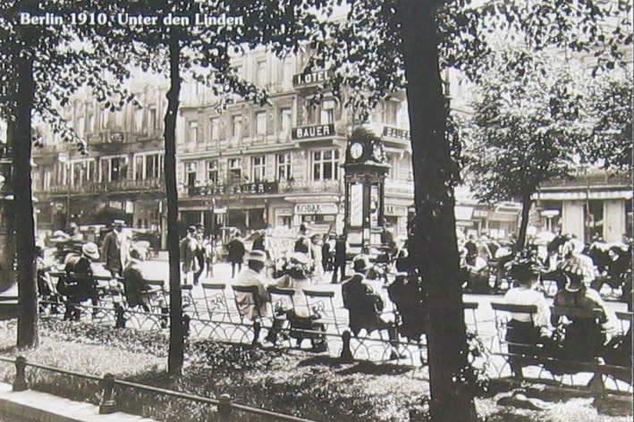
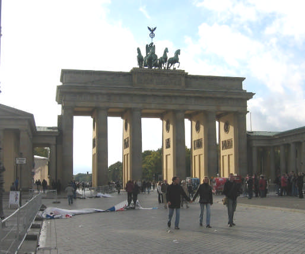
But we moved on and the Brandenburg Tor came into sight and after a long day this unique symbol of Berlin and its recent history had a hard to describe emotional impact on me. There it was; that icon of Berlin in the late afternoon sun, in heavy shadow from the eastern approach and after passing through, glistening gold from the west. In its past, black with grime, it became the sinister symbol of the Nazi regime, conjuring visions of goose-stepping SS and Wehrmacht troops passing under its portals. And then in the years that followed, looming above the crude graffiti covered Wall that divided the city it symbolised the post-war fate of Europe, the Cold War – East and West. And now? – a glistening hope for the future – a unified Berlin; a unified Germany. The day had become exhausting. The late afternoon sun was hot. We were parched. In the remnants of the now finished Berlin Marathon cold beer was available and a scattering of chairs remained. We downed a couple of pints (or were they half litres?) and felt invigorated. The Tiergarten was behind us, stretching out to the west bisected by the Strasse de 17 Juni and at its centre, visible in the setting rays of the sun, the Siegessaule, the Victory Column, commemorating forgotten victories of the Prussian period. (Did it survive WW2? – apparently it did. Lonely Planet tells us that the gilded lady on top of the column representing the Goddess of Victory and called by the locals Gold Elsie,ironically now the symbol of the Berlin gay community.
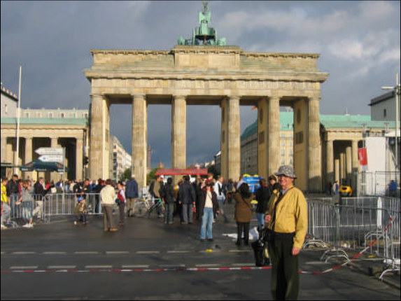
East Of The Gate
We continued towards the Reichstag, now fully restored and once again the seat of the Bundestag, the German Parliament. On the western side of the Franz Ebertstrasse on a fenced section of the Tiergarten are a number of large white Christian crosses (I counted 13) each bearing the name of a person and a date. On some a photograph is inset. They were all young men and women. These are memorials, not formally recognised by the German or Berlin Governments but tolerated, to those who lost their lives attempting to ‘cross over’ during the Cold War period. Presumably these 13 memorials referred to those attempting to cross over near that location. We found another set of memorials on the western bank of the River Spree where many cross-overs were attempted, some successful others resulting in death.
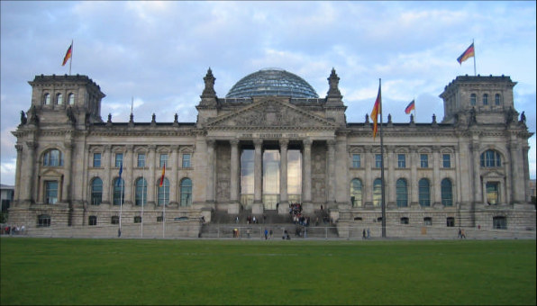
We moved on to the Reichstag, a great 18th century structure that has been completely restored – more than that – rebuilt internally preserving only the outer shell and incorporating a huge glass dome over an internal courtyard turning it into a vast atrium space. (Thank you Lonely Planet). The Reichstag fronts the Platz der Republic and I was able to take a frontal photograph from within the Platz, thanks to an accommodating guard who allowed me to pass through the barrier. It was not possible to enter the building although tourist can do so at other times. We turned away from the Reichstag to take in some of the other buildings in the vicinity. To the west across the Platz der Republic we could see an unusual structure of glass, columns and vaulting spaces enclosed by a broad semi-circular arch. Neither Lonely Planet nor our map could help in identifying it and although initially thinking it was the Haus der Kulturin der Welt (House of International Culture), that structure seems to be some distance beyond. Like many others we were to see, its architecture was absolutely brilliant – sparkling clean crisp lines. In Franz Ebertstrasseopposite the rear of the Reichstag is the Haus Bundestag (Parliamentary Offices) in more traditional style. Then continuing north on Franz Ebertstrasse and crossing Dorotheenstrasse into Frau Ebert Platz we observed the remarkable Jacob Kaiser Haus. Further into Frau Ebert Platz and Paul Lobe Allee is the Paul Lobe Haus to the left bridged across the Spree to Marie Elizabeth Luber Haus to the right. This incredibly adventurous architecture is modern Berlin in remarkable contrast to the old City. (It was on Dorotheenstrasse that we saw some very dispirited Marathon runners slowly making their way to the finish line)
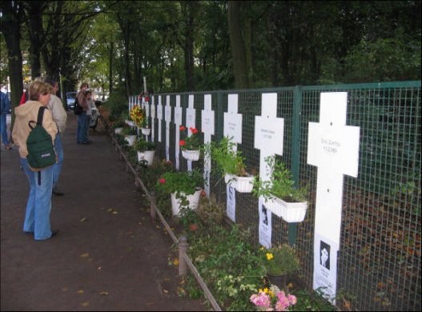
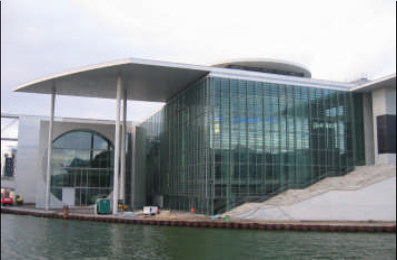
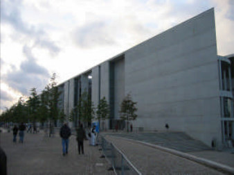
I think we were limping at this point as we made our way back to Mitte. I can’t recall whether we entered our pension at this point or did we simply continue down Oranienburgerstrasse in search of a beer and a feed? We found both, first a beer (a huge one) in a Berlin pub where Marathon revellers were celebrating an apparent win and then in a side street off the Strasse a good feed (Chris a goulash and me a very tasty green salad) and a flask of passable wine. Then it was back to the Hostel Adler and our tiny room for rest. END OF DAY ONE.
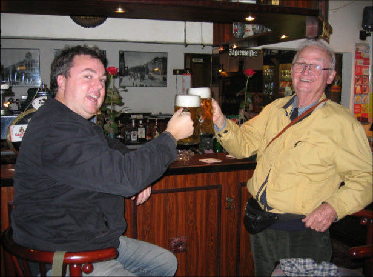
DAY TWO
Monday 27 September 2004
After a surprisingly good night’s sleep despite the screeching noise of the trams negotiating the corner of Friedrichstrasse, Oranienburgerstrasse and Linienstrasse outside our open window, we showered and shaved in the uni-sex facility – an interesting experience. Chris drew my attention to the unique design of the WC pedestal where the excrement sits on a shelf, perhaps for inspection purposes until flushed into the bowl and away. Feeling somewhat fresher, although I experienced some stiffness in the limbs, we departed at 9.30 am in search of breakfast. Proceeding east along Oranienburgerstrasse we passed again the Neue Synagogue and Centrum Judaicum (Jewish Museum) and stopped to take a photo. The footpath in front of the Synagogue was still cordoned off with a couple of rather corpulent Berlin police ‘on guard’. We moved on finally finding a small café where we had a rather unappetising breakfast (bitter coffee and an un-buttered breadroll). Germans appear not to be big on breakfasts! Our intent was to visit ‘Check Point Charlie’ that day at the southern end of Friedrichstrasse and we were at that point heading in the wrong direction. We went back to Friedrichstrasse having decided to catch a tram; a challenge in knowing how and how much to pay. I think we had a free ride since after a short while having crossed the Spree we realised the tram was no longer trundling down Friedrichstrasse but departing somewhere east of it. We quickly alighted and walked the rest of the way to Check Point Charlie.
‘CHECK POINT CHARLIE’
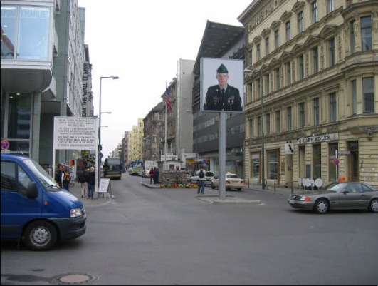
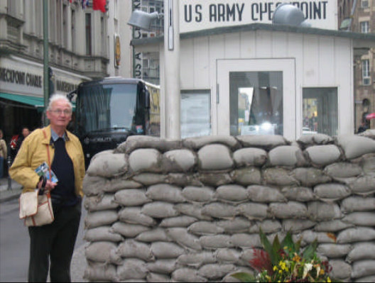
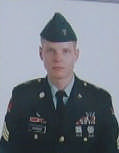
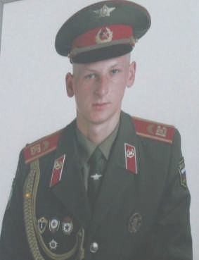
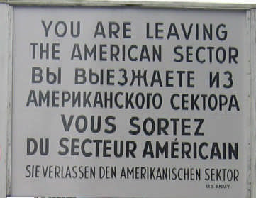
This was our first and only experience of a Berlin tourist venue which Lonely Planet calls the ‘epicentre of the cold war’. Tourist buses were disgorging hundreds of tourists, mostly Japanese or Chinese perhaps, all with their guides blasting off through hand held megaphones. Check Point Charlie is on the southern side of the junction of Friedrichstrasse and Zimmerstrasse and it was along the latter that the wall was constructed with a wide zone of buildings on the northern side cleared to become the infamous ‘border strip’ – a ‘no-man’s land’. Much of the strip has been rebuilt with buildings of not very impressive design. Checkpoint Charlie was one of a number of crossing points where authorised crossings were permitted. It was also the best known since some unauthorised crossings here resulted in disastrous consequences, often the death of the ‘fugitive’, attracting the attention of the international press. A replica of the US (West Berlin) guard house complete with sand bags has been placed in its original location. In front of the guard house above the street are two large coloured photographs; one facing north depicting a US soldier and the other of a Russian soldier facing south, both young men. On the eastern side of Check Point Charlie is the ‘Haus AM Checkpoint Charlie’, a private museum with relics and photographs depicting the many attempts to cross over, some successful and some disastrously unsuccessful. The museum was created soon after the border between east and west was closed by a Berliner committed to preserving the record of the wall and the heroism of those who attempted crossings. He obtained the old building provocatively close on the western side of the border adjacent to Check Point Charlie and the displays developed progressively thereafter until unification in 1990. A modern extension to the museum has been constructed on the corner position (the Haus AM Check Point Charlie is one ‘lot’ back from the corner) which features non-violent resolution of dispute from Ghandi to Mandella; in essence a ‘peace museum’.
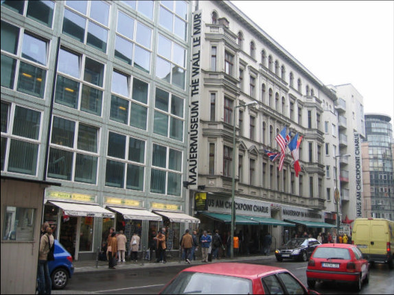
The initial impact of the Check Point Charlie re-creation is one of tawdriness. It is heavily commercialised and yet it impresses and impacts on the senses. So much happened here that was so senseless. It is indeed a monument to the cold war. Having taken the requisite photographs of Check Point Charlie and its surrounds we joined the throng entering the museum and purchased our tickets. Thereafter it became an exercise in pushing and shoving and trying to read the descriptive texts next to each display. We had availed ourselves of the ‘audio-tour’ devices but with the crowded bus tours and their tour conductors shouting their scripts at the top of their voices (thankfully the hand held megaphones were not permitted within the museum) it was difficult to follow the prescribed sequence. Perhaps the crowd thinned as the morning progressed (I suspect the Japanese/Chinese tourists had but limited interest if in fact any at all) and we were able to devote more time to the detail of the various exhibits depicting graphic stories of escapes, the remarkable ingenuity of those who attempted and the brutality of the Ost Berlin guards, the wall, the ‘Mauer’, German against German.
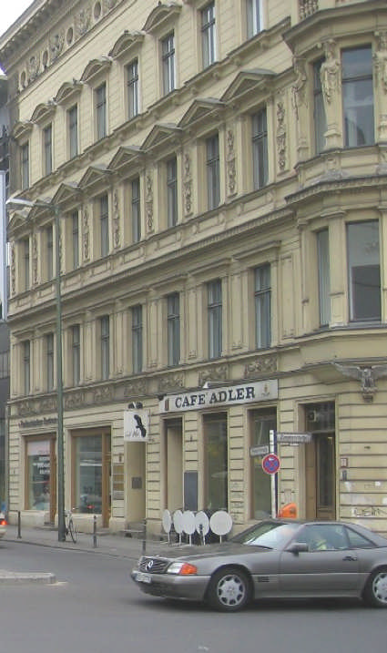
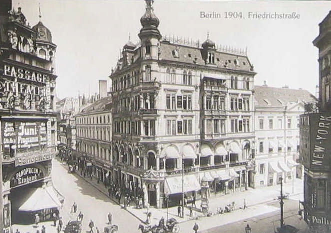
Café Adler
It was early afternoon when Chris and I re-emerged onto Friedrichstrasse by which time we were ready to eat. Directly Hostel Adler?) in a beautiful old building that had remarkably survived WW2. Here we had a burger lunch and a substantial jug of beer (Chris says a sandwich and milkshake!). An historical postcard I bought the following day depicting that very corner (ie, Check Point Charlie) and the Café Adler building in 1904, showed the building then named ‘P & C Habig’, perhaps a department store. Opposite, on the corner now filled by the ‘peace museum’ is the’Passage Theate’ over the entrance to which is the name ‘Panopictum Eingang’!
Topographie des terrors It was approaching mid afternoon as we left the Café Adler and we proceeded west along Zimmerstrasse. Where it becomes Niederkirchnerstrasse at the junction with Wilhelmstrasse we were confronted by the sign with the evocative title ‘Topographie des Terrors’ (Topography of Terror). Our intent had been to find one of the remaining sections of the wall and it was here, on the southern side of Niederkirchnerstrasse (formally Prinz Albrecht Strasse), but more than that; on the southern side of the wall was the open air exhibition of the Nazi period from Hitler’s ascendency to power in1933 to its final defeat in1945. The site is well chosen because the building, once the palace of Prince Albrecht, was taken over by Hitler’s Third Reich as the Gestapo headquarters, the SS Central Command and the Reich security main office. The palace was a prime target of WW2 allied bombing and whatever remained after the war was totally demolished leaving a mountain of rubble, still standing. The exhibition is more or less under the wall in the foundations of the front façade of the old palace. Excavation of the rubble uncovered the only remaining part of the building; the cells where prisoners were held and tortured.
Chris and I collected our audio-guides and commenced at the western end intending to spend only half an hour there since there were other things we wished to see on our planned route for the day – Potsdammerplatz and then into the central area of the western sector. Two hours later we emerged at the eastern end, somewhat shell-shocked. Perhaps for Christopher it was a revelation not having lived through that period and with most of his generation having only passing interest in how WW2 came to happen. For me it was re-living all that I had knownf the Nazi period and the European theatre of WW2. The exhibition displays incredible detail exposing all of the horrors of the period, directed and performed by men who presented themselves as the aristocracy of Germany – the Aryan master race, their ghastly policies and actions justified by their commitment to racial superiority in some completely warped way. For each step of the audio-tour one could explore further in increasing depth, the curricula vitae of each of the principal players and contributing background to each of the presented events. To cover all of that would have taken much longer than two hours. Emerging from this near catacomb of terror my feelings were a mixture of disgust, horror and yet admiration for the German people who are prepared to own their history and let the world see it. I tried to reflect this in the paragraph I left in the visitor’s book, perhaps in contrast with a statement made by an American visitor a day or two before, that Chris happened to chance across – to the effect that the German race got all they deserved and they should never forget that.
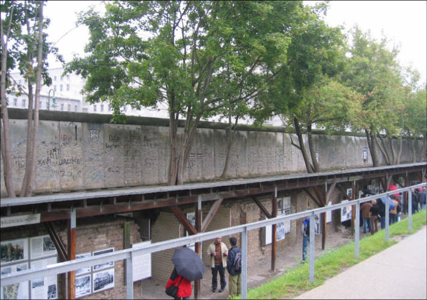
Why is this display in such an apparently temporary lodging? The reason given is that the Berlin Government was bankrupted in the unification process and in the restoration of its historical buildings. It is said also that the Government is wary of such monuments becoming neo-nazi shrines. According to the on-site information office a substantial modern glass structure is planned for the site to be a comprehensive museum of the Third Reich. I suspect the Topographie des Terrors will lose its impact in such a structure.
potsdammerplatz We continued then further along Niederkirchnerstrasse towards Potsdammerplatz, past the Martin- Gropius-Bau Berlin Gallery (we didn’t have time to enter) on the left and opposite on the right, the Abgeordnetinhaus, now the Berlin State Parliament and once the Prussian Parliament. Lonely Planet tells us that Hermann Goring during WW2 used it as a Luftwaffe officer’s club until its bombing. Turning into Stresermannstrasse we found more of the wall this time containing some good examples of the Wall Art (graffiti). We stopped and took photos. From here we could see some of the remarkable construction proceeding in the areas left vacant by demolition and no doubt the route of the wall and its horror strip – a ballet of cranes as Lonely Planet called it! Then there was Potsdammerplatz itself, just ahead of us – where Hitler had his infamous bunker and where he and Eva Braun took their own lives as the war and the Russian Army closed in around them; the bunker long since gone – obliterated so that no trace of it exists today –so it is said!
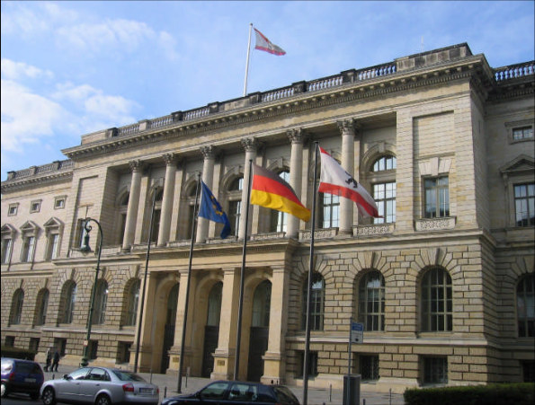
Chris became fascinated with a small box-like structure on four legs in the Platz which he identified as the replica of the first traffic lights in the world – a German invention!
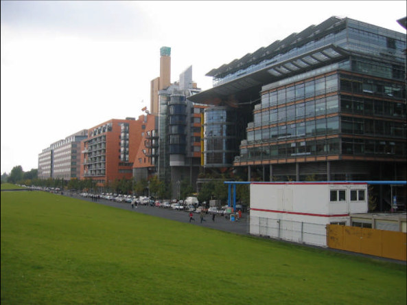
Potzdammerplatz – with its incredible modern architecture – steel, glass, green swathes of lawn, red brick, the vaulting glass dome of the Sony Centre with a mini-city beneath – such a contrast to the old city where we had spent the past two days; modern Berlin where the architectural spirit had been allowed to soar. And judging from the surround of cranes – more, much more happening. Berlin old and new; after all we had seen over the past two days it was more than my psyche could accommodate. I felt tired, physically and mentally – perhaps Christopher too.
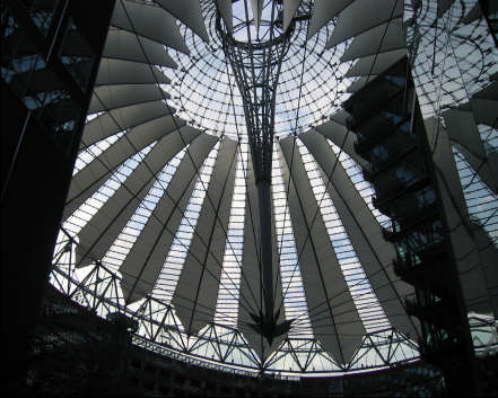
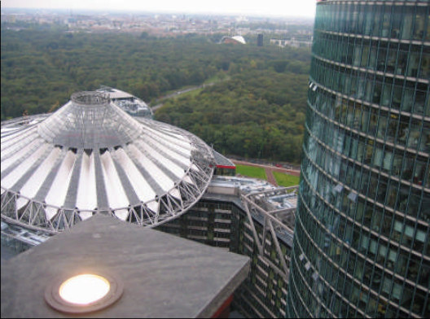
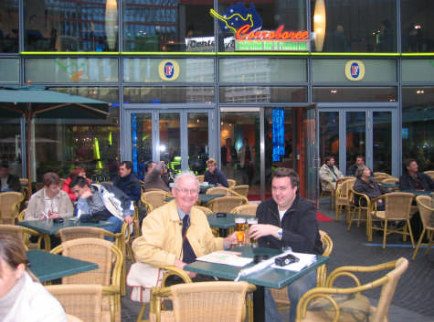
We ventured into the Sony Centre, under that amazing glass dome and what did we find? ‘Aussieland’ and the Corroboree Bar serving cold Fosters. How could we resist? Well – we didn’t! Perhaps it restored reality and we were ready to move on.
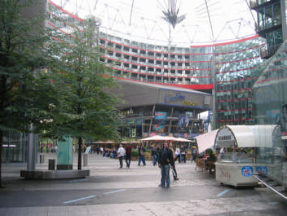
Chris took me to the top of ‘Potzdammerplatz 1’ in a lift so fast it made you feel – well – as if something was about to give. From the observation deck at the top one could see all of Berlin – an incredibly flat city where it is said the only hills are those created artificially by the piles of rubble. Below us was the Sony Centre and stretching away to the west, the dark green expanse of the Tiergarten which time would not permit us to explore. Alexanderplatz and its tower to the east, that centrepiece of communist architecture. Despite the hour, after six pm there was still sufficient sunlight to take a number of photos from this panoramic viewpoint.
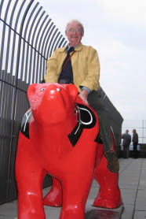
On top of ‘Potzdammerplatz 1’ – I couldn’t resist it!
The red bear is the symbol of Berlin
Returning to street level we decided to take the underground from Potsdammerplatz station to the centre of the western sector – to Zoologischer Garten – the Berlin Zoo. Potsdammerplatz UG station was having a great deal of work done to it – total refurbishment to provide for shops etc. It is a huge complex of, I think, three levels; may even rival Westminster in London. It was in partial darkness. Thankfully Chris seems to have a sixth sense that comes into play in UG railway stations no doubt honed from using the London Tube. The Berlin UG system is extensive and the trains are modern and comfortable. We arrived at Zoologischer Garten UG station very quickly the journey being little more that the E–W length of the Tiergarten.
THE WESTERN SECTOR - CHARLOTTENBURG
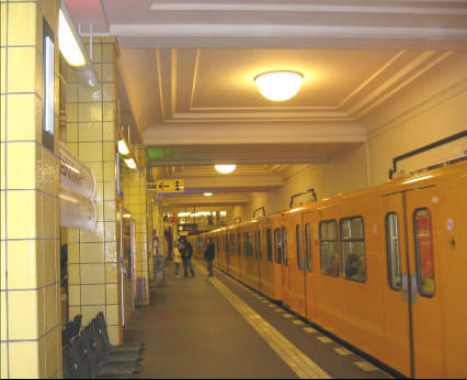
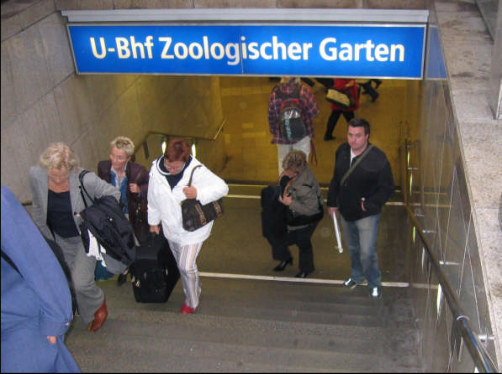
Emerging from the station to street level in Bundesallee-Joachinstaler-Strasse we crossed into Budapesterstrasse which runs past the Zoo and its rather Chinese-looking entrance. There was still sufficient daylight to take a photo of this rather bizarre feature (the Zoo was closed of course but the odd animal noise could be discerned). Chris had a mission and I was not sure what it was until after following a circuitous route down Nurnburgerstrasse we reachedKurfurstendamstrasse – the commercial heart of Berlin west of the Tiergarten. At this point or not far from where we entered the Strasse was a remarkable monument resembling the broken links of a chain standing some ten or so metres in height. But viewed through the chain and framed by it is the Kaiser Wilhelm Gedachtnis (memorial church) remaining in its bombed out state. (we had previously noticed this ruined church from the Zoo entrance) This framed view of the memorial is featured on the cover of Lonely Planet but no where can I find a name for the ‘broken chain monument’ or any information about it. Nevertheless, it is an impressive view scape, this dignified WW2 ruin, floodlit at night, standing in the commercial heart of Berlin. Chris tried various techniques with my digital and his video camera to achieve the best effect while I sat on a nearby bench watching the passing traffic, people, and modern buildings aglow with neon signs, marvelling at the incredible contrasts of east and west and all that in between – thankful for the opportunity to rest awhile. But not for long.
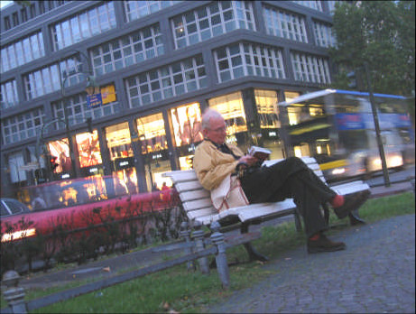
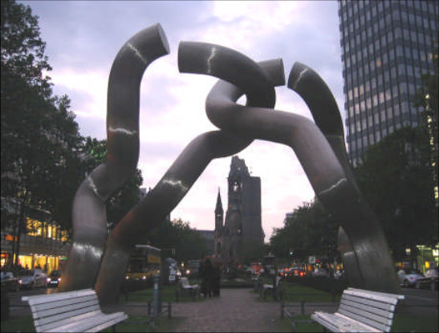
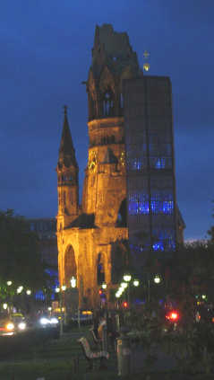
Kaiser Wilhelm Gedachtnis
We continued along Kurfurstendamstrasse to the Kaiser Wilhelm Gedachtnis for closer inspection. By now daylight had gone and the floodlit ruin was spectacular, looming over the surrounding cacophony of commercialdom. Next to it is the Gedenkhalle (hall of worship) an octagonal tower of deep blue glass built, so Lonely Planet tells us, in 1961. In my opinion it detracts from the adjacent magnificent ruin.
We decided to explore some of the side streets but mindful that it would be easy to lose track of where we were in the darker streets – too dark to read the map – we proceeded cautiously. The buildings resembled substantial old homes, well maintained and probably now used as commercial and professional offices. In fact the area reminded me somewhat of the inner suburbs of London – Chelsea, Kensington perhaps. But we were tired and hungry – Christopher more the latter – and he had in mind a Bavarian restaurant he had identified in Lonely Planet. He hailed a cab and the driver did ‘Sprechen sie Englisch’ and found us the restaurant – the ‘Engelbrecht’. Was it Bavarian? – I am not sure. Lonely Planet told us that it once was the ‘Trichter’ Restaurant frequented by the playwright Bertholt. They were over booked but the very pleasant martre d’ hote told us to wait awhile and he would be able to place us. We waited at a small café opposite where we had a very welcome and substantial German beer. Bavarian or not we nevertheless had an excellent meal and a bottle of German Rose – a new experience for Chris I think.
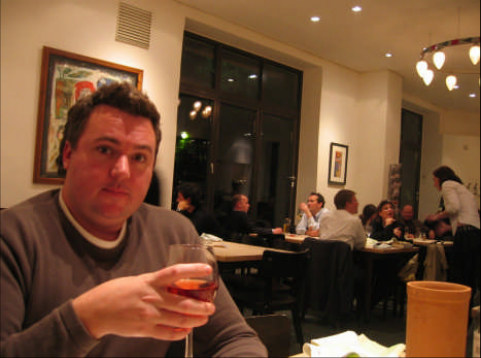
But the night was not over. Chris was anxious to photograph the Brandenburg Gate floodlit at night so we took another helpful Berlin taxi to the Gate and left it there; the driver seemed to think it was a little odd – at 10.00pm. Our intention was to walk back to our pension after taking a few photos. I was able to get a reasonable photo of the Reichstag at night also – there was no guard to question my walking out onto the Platz der Republik in order to get a full frame shot. We then made our way down to the Spree again (I greeted an–approaching woman with Auf Wiedersehen and got an odd look in response – my German is not too good and I realised later I had said ‘goodbye’) intending to follow its embankment around to Friedrichstrasse. Instead we crossed to the north in Luisenstrasse and then wended our way through a few back streets, Reishardtstrasse and others, passing many strange and ghostly buildings, apparently empty, still showing considerable war damage. Perhaps their day will come! Our pension came into sight. Opposite, a nightclub of dubious appearance was in full swing and we resisted the encouragements of the German gentleman at the door to enter. But we stopped and pondered at the rear of the Tachelles. In that preserved ruin behind the glassed sections there were blue lights and music was pulsing. Perhaps it was not as it seemed. Tomorrow we would look further but tonight it was time for bed. DAY TWO WAS OVER.
DAY THREE – Tuesday 28 September 2004 This was to be our last day in Berlin. We checked out of our about 9.00 am, the very helpful receptionist allowing us to leave our bags in her very confined office space. Our objective for the day was to have a closer look at the Russian communist influence on post WW2 Ost Berlin. It is of course easy to be totally derogatory of this time and see little good in any of the communist influences or more specifically the GDR (Ost German) influences in the post-war re-development of Berlin. Without doubt the GDR government under Ulbricht and Honecker was harsh, imposing a heavily regimented life on Ost Berliners. The closing off of West Berlin, largely preventing movement and interchange of people between east and west, denying access to families on either side, caused great hardship. The closing of the border leading to the eventual building of the walls – inner and outer – and the death strip between shocked the world and at one time might have led to World War III. But it didn’t and the isolated West, virtually an island of free enterprise and capitalism surrounded on all sides by the communist controlled society and economy, thrived. This contrast remains very evident today. But Ost Berliners and with all of Ost Germany enjoyed the guarantee of work robbed only of the right to entrepreneurship. If life was grey and monotonous, it was also certain and there was always bread on the table. The enforcer was the Stassi, feared by all, whose crimes against the people may have equalled those of the German Gestapo in WW2. If the Ost Berlin government did little in restoring the buildings of old Berlin to their former glory, they at least removed the rubble and left their architectural mark in other ways. Chris and I wanted to see what that was and we had been directed to a broad boulevard called Karl-Marx-Allee stretching east of Alexanderplatz.
TACHELES
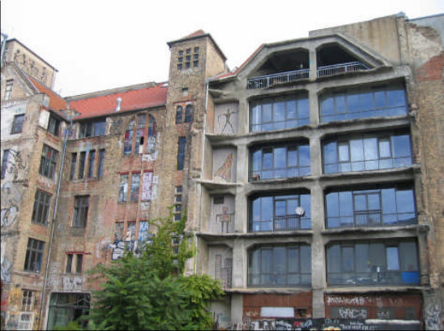
The rear from Friedrichstrasse
The ‘park’ at the rear – from Friedrichstrasse
The graffiti wall
Leaving the Hostel Adler we crossed Friedrichstrasse into Oranianburgerstrasse intent first on having a closer look at Tacheles. Lonely Planet had told us a little of its background but it wasn’t until our return to London that Chris found a website which gave something more of its turbulent history. We are told that ‘Tacheles’ is an old Jewish word meaning ‘to disclose, to reveal, to speak clearly’. Perhaps that relates to its current use as an art centre – a meeting point for people interested in arts and culture and for those who think they are. The building itself was the entrance of the Friedrichstadt-Passage, a huge shopping mall built in 1907.
The staircase
In the entrance – Chris
In WW2 the building was used by the Nazi Party as an administrative centre, however, from 1943- 45 it was extensively bombed and was partly but not completely destroyed. The Ost Berlin government tidied the site leaving the front section in Oranianburgerstrasse intact and the rear section in Friedrichstrasse as a vacant allotment. The GDR had no funds for restoration and in any case they had longer term plans for the site. It was in 1990 after unification that it was discovered and taken over by a group of young artists and now it has been declared an historical architectural monument due apparently to its unique steel construction. The Berlin government now trickles funds into it which accounts for its partial re-furbishment to make it weatherproof and habitable. It has been the scene of many international performances, concerts and exhibitions. The website comments that “Because of its special architecture and the ‘ruin appearance’ of its rear side and due to its 13 year of activity in the international arts field, ‘Kunsthaus Tacheles’ became quite a celebrity on a national and international scale. It is listed in many travel guides of Berlin.”
We ventured into its imposing tunnel entrance to find walls and other objects – a bowl-shaped table – papered in newsprint overlain with black ink graffiti. The staircase also, but with a complicated arrangement of ropes, rods and netting slung from the walls and ceilings. It seemed to be maintained after a fashion and we wondered about the blue lights and music of the night before. We felt discouraged from venturing further. There was something eerie about it all and with our then lack of knowledge of its function and purpose we left the structure and wandered into the courtyard – the vacant allotment. As previously commented in ‘day one’, with it there is the odd looking ‘indian village’ structure of brush and canvass. Various war relics were lying around being consumed by long grass and weeds. The hut structure seemed to be occupied so we again were constrained in going too close. The adjoining huge graffiti wall loomed over the open area. From a postcard dated somewhere in the mid ‘90s it could be seen that this courtyard was a little more orderly with gravel paths and patches of green lawn but all that now is overgrown. And what will come of Tacheles? I could believe that it is something of a headache to the Berlin government. Perhaps simply leave it alone for a few more years – let time determine its fate.
KARL MARX ALLEE We moved on, heading for Alexanderplatz, feeling like something better than yesterday for breakfast. Chris had a further mission quite unrelated to our Berlin experience. He needed to get to a Berlin Internet facility to book seats for the Rugby Union – Australia v England – at Twickenham. He found what he was looking for in an office building just off Alexanderplatz and commenced on what proved to be an abortive mission. Due to some mishap the bookings hadn’t opened and after calls and emails to Sharon he finally gave up. We had a late breakfast of coffee and donuts while there. I took a couple of photos of the less than impressive buildings around the Platz – of communist origin I suspect, but finally we moved on into Karl-Marx-Allee.
At one time called the Joseph Stalin Allee it had a name change after the fall of Stalin. No doubt ‘Karl Marx’ (who, after all was Germanic) seemed a safe bet and likely to continue into the future. It has, the present Berlin government not wishing to obliterate all signs of this significant period of its recent history. The Allee was constructed progressively by the GDR, not just the boulevard road of three tree-divided lanes, but also the imposing flanking tile covered buildings, the ‘Volkspalaste (people’s palaces). These are very much of the Russian communist style sometimes referred to as the Zuckerbakerstil, ‘wedding cake’ style, apparently greatly favoured by Stalin himself. The Allee follows the route of the Red Army in its march into Berlin. Lonely Planet tells us something of its history…”The monumental Karl-Marx Allee, leading south east from Alexanderplatz is one of the most impressive vestiges of
the former Ost Berlin. This was the GDR’s first socialist boulevard and a source of considerable national pride. It provided modern flats for thousands of people and also served as a backdrop for military parades. Until the early 1970s it was also the ‘Kurfurstendamstrasse’ of the east, lined with shops, cafes and restaurants. Now newly restored and protected as an historical monument the Allee is undergoing a modern renaissance with bars and businesses bringing new life to the giant boulevard. Its greater importance lies in its being a giant showcase of GDR architecture and a perfect metaphor for the inflated sense of importance and grandeur of that country’s regime”.
………and more!
incredibly broad tree- lined boulevard (nearly 100 metres wide). There seemed to be little activity along the way. The UG follows the same route with stations at major intersections. At one point there was a gypsy market under the trees, some two or three hundred metres in length selling mostly cheap apparel. (I nearly bought a pair of cord trousers similar to what I was wearing). Many of the major intersections had large traffic roundabouts with fountains in the centre and flowerbeds. The ‘flanking ‘people’s palaces’ were incredibly neat – nothing out of place, and yet somehow I found it all rather depressing. What was it? Certainly it was hard to find anything specific to criticise. Perhaps it was the sameness of everything, block after block, all the same, same colour – creamy beige tiles – same shape – unrelieved monotony. There were some larger imposing structures with colonnaded towers near intersections. On we walked, through Strausberger Platz, then to Warschauerstrasse and the Frankfurter Tor. It was lunchtime and Chris bought a ‘currywurst’ (said to be a Berlin invention) that was apparently highly recommended but feeling a little queasy in the stomach at the time I desisted. I felt flattened by it all. There was so much of it. We had covered about three kilometres from Alexanderplatz and the Allee continued on for another four, probably more of the same. We decided that what we had covered was enough and we took a tram from the intersection with Warschauerstrasse south to the River Spree where we saw the astounding sight of the Oberbaumbrucke (bridge over the Spree) described as a having “jaunty towers and turrets, crenellated walls and arched walkways, very much like a medieval drawbridge leading up to a fortified castle” (Lonely Planet). Built in 1896 it is clad in terra-cota tile or something similar. In cold war days it featured as an exchange point between east and west.
THE MAUER – EAST SIDE GALLERY We didn’t cross the bridge. Our purpose was to walk the length of the longest remaining section of the Mauer (wall) along the northern bank of the Spree. This section of the wall has become well known for its art graffiti and is referred to as the ‘East Side Gallery’. Some of the art is the work of well known artists. The art work takes a number of different forms from very well executed cartoons to more symbolic work to the sort of graffiti art we are familiar with here. The border between West and East here is on the south side of the River Spree, hence the wall on the north side was entirely in Ost Berlin. The significance of this is that all the graffiti art on both sides of the wall occurred after Unification. The wall itself is in a state of increasing disrepair and one wonders at how long it will be allowed to remain; possibly only until tourist interest wanes.
The Wall and the East Side Gallery
The ‘Kiss’
We walked along the wall length (in Muhenstrasse) taking in the artwork, in the occasional gap moving to the other side. On the opposite side of Muhenstrasse (the northern side) the area had been subject to extensive demolition with many buildings, not of substantial construction, collapsed. The Gallery reflects the exaltation of the wall’s demise – the demise of the GDR. One of the very famous graffiti cartoons is featured here – ‘The Kiss’. It shows a convertible car crashing through the wall. In it are Brezhnev and Honneker (each labelled) in a kissing embrace. To the left is a red star containing the ‘hammer and sickle’ beneath which are the initials CCCP/SU and to the right another red star containing (presumably) the symbol of Ost Germany and the initials beneath DGR/DOR. The cartoon is signed off ‘Laker’. Its specific significance is not clear to me although it is certainly beautifully executed. The wall is at many points overgrown and partly obscured. Near the end of the gallery section where the wall turns south to cross the Schillingbrucke bridge there was a circus tent set up with all the paraphernalia of a circus. No doubt it attracted an audience. Its location, although not particularly attractive was nearly opposite the Ostbahnhof railway station. At this point we decided to avail ourselves of the Ostbahnhof and catch a train into Alexanderplatz. We had had enough of walking and yet there was still more to do in returning to our pension, collecting our bags and making our way the Tegal Airport in time for our departure to London.
BERLIN RAIL STATIONS Ostbahnhof proved to be an experience in itself. It is one of the two international rail stations in Berlin and it is very modern and comprehensive with exchange facilities, shops and restaurants where we had ‘incredible’ (Chris’s word) ice-cream sundays. Surface trains are less frequent than UG trains – surprisingly they duplicate the UG system at times with stations only a short distance apart. We had a little time to wait and after a short tour of the station we sat and watched a performance by a group of players doing an act, an amusing demonstration on how to pick up rubbish! – presumable, to encourage Berliners to keep Berlin clean. Finally the train arrived and it was only a few minutes before we were alighting at Alexanderplatz station. It was too soon to take the direct route back to our pension so despite tiredness we decided to extend our walk and take a further look at some of the historical buildings we may have missed on our first day. I think Chris had a further mission but I have forgotten what it was – perhaps try to book those football or concert tickets again, but it didn’t happen! We both had a mind to look in on the Berliner Dom (Cathedral – not sure what denomination, perhaps Lutheran), so we set out southwards.
THE BERLINER DOM I am not sure where we crossed the Spree; it was on a very traditional bridge with wrought iron balustrades either side but the ‘building’ that caught our attention on the south side of the Spree was a large three storied red brick structure bearing a hanging drape with the Mercedes Benz three-pointed star on it. The brickwork seemed incredibly neat and perfect and we walked across to examine it further and to our surprise it was nothing more than a hole in the ground surrounded by scaffolding over which was tightly stretched plastic sheeting on the outside of which was printed or painted the pattern of brickwork, with windows, doors, parapet – everything you would expect to find on such a building. Perhaps that is what is planned for the site, but why bother to go to such trouble?
We continued on and reached the Dom. It had started to rain quite heavily so, after paying a small fee we entered into what was to be our final Berlin experience. Lonely Planet tells us that the Dom was initially completed in 1903 although there had been a church on that site for many years previous. War damage kept the Dom closed until after restoration in 1993. The Dom was the place of worship for the Prussian royals whose city palace was nearly opposite. We entered the vaults beneath the building where the massive sarcophagi of past kings and princes are held – somewhat dusty. We made our way up a staircase into the nave of the Dom, a huge more or less circular auditorium containing magnificent religious artwork, stained glass windows all very Teutonic, almost gothic;
overpowering. The Dom is surmounted by a huge copper dome and one can climb the staircase into the viewing platform it contains – but we didn’t. I was feeling exhausted, physically and mentally I think, the effect heightened by the organ music resounding through the cathedral – Teutonic music it seemed to me. We sat and listened for a while – an organist practising perhaps, nevertheless an excellent one. I felt that Berlin for us was over. The emotional impact of Berlin had caught up – I wanted out! I think Chris agreed.
We left the Dom and made our way back to Friedrichstrasse and then by tram this time to our pension, the Hostel Adler. Collecting our bags we entered the UG and took the reverse route to Tegal, UG to Kurt Schumacherplatz then bus to the airport.
Tegal is very efficient and quick going through the various checks, thorough at that. We had some time to fill in, a bite to eat and then we boarded our BA aircraft. A tiring flight to Heathrow; tube to London then to Clapham. To bed at last and a restless night – trying to shake off Berlin.
The Dom – the high alter
In writing the foregoing I have tried to reflect the culmination of a held but undefined and distant fascination I have had for that city and its recent history. The opportunity to experience it in-situ was serendipitous. The experience still lives with me. It was all that I expected; the history of that city’s turbulent past seventy years. It is all there to see. But we barely scratched the surface. One could spend weeks exploring the museums, the parks, the streets, the restaurants – all that this vast city has to offer. Chris has sent me a few further observations following receipt of my first draft. They are: People: The look of alarm on the faces of Germans when you cross the road before the little man turns green. Perhaps this is the result of years of tyrannous autocratic rule. Architecture: The 1950s GDR architecture would have been considered very modern in its day by their standards although dated and ugly by today’s standards. I think it was intended to be a demonstration of Soviet superiority. Sensitivities: Dealing with two pasts (1) WWII/Nazism – potential for memorials to become neo- nazi shrines. (2) GDR/Cold War and Unification – potential for memorials to offend; nobody won, or did they? Overall impression: A living history lesson! Incredibly moving, surprising, interesting, thought provoking and very relevant to the world today.